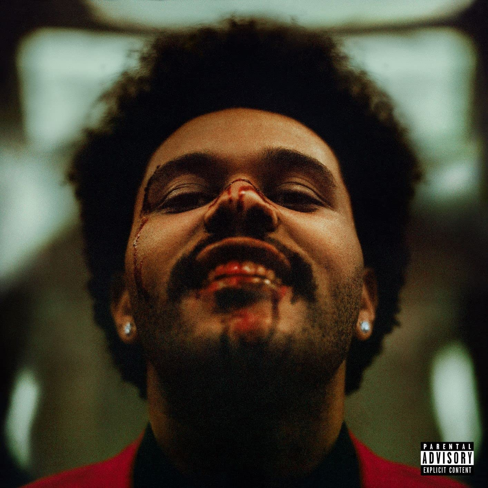
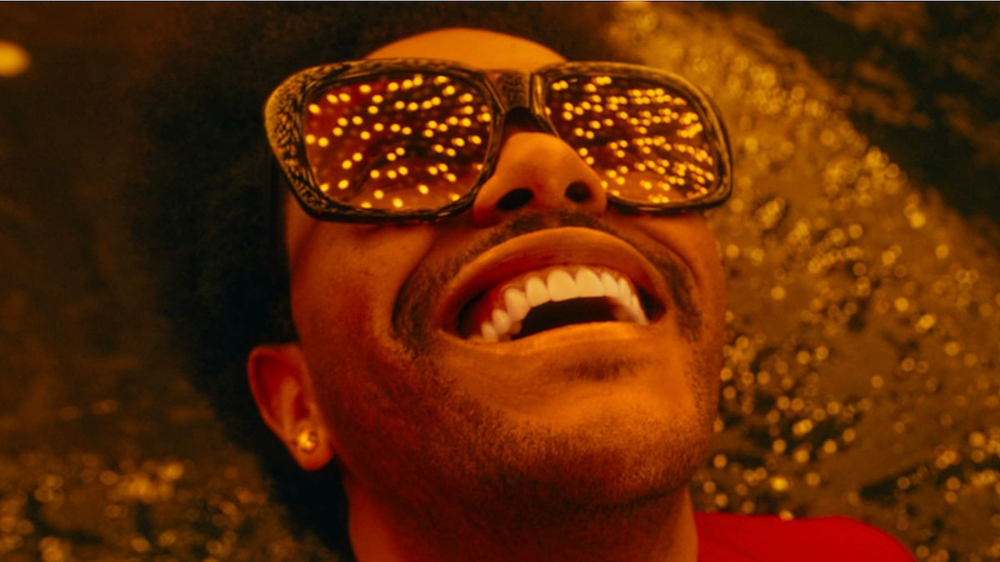

The story behind the 1980s-style pop hit that broke world chart records.
Artist: The Weeknd (Abel Tesfaye)
Album: After Hours
Release Date: November 29, 2019
Genre: Synth-pop / 80s Pop
Length: 3:20
Producers: Max Martin, Oscar Holter, The Weeknd

"Blinding Lights" was released in November 2019 as the main single from The Weeknd's fourth album, After Hours. Before its official release, the song was first heard in a television commercial for a Mercedes-Benz electric car. The Weeknd worked with famous pop producer Max Martin to create the track. With this song, The Weeknd moved away from his old slow R&B style and made a fast, energetic pop song inspired by 1980s music.
The song is famous for its fast tempo and catchy keyboard melody. It uses electronic drums and analog synthesizers that sound like popular songs from the 1980s, such as A-ha's "Take On Me." Because of its fast rhythm (171 beats per minute), it quickly became a popular song for driving, workouts, and dance floors around the world.
Even though the music sounds happy and energetic, the lyrics are about loneliness and missing someone. In the song, The Weeknd sings about driving alone at night in Las Vegas to see the person he loves. He says that the city feels cold and empty without his partner, and the bright street lights ("blinding lights") cannot replace the warmth of a real relationship.
"Blinding Lights" is one of the most successful songs in music
history:
Number 1 Hit: It reached the #1 spot on music charts in
more than 30 countries, including the US, UK, Germany, and Australia.
Billboard Record: It stayed on the US Billboard Hot 100
chart for 90 weeks, more than almost any other song in history. In 2021,
Billboard named it the "Greatest Hot 100 Hit of All Time."
Spotify Record: It passed 4 billion streams on Spotify,
making it one of the most-played songs ever on the platform.
Super Bowl: The Weeknd performed the song as the final
act of his 2021 Super Bowl Halftime Show.
The music video was directed by Anton Tammi and filmed in Las Vegas. In the video, The Weeknd wears a bright red suit, black leather gloves, and sunglasses. He walks and dances through empty streets under neon lights, gets into a fight inside a club, and ends up with a bloody face while still smiling at the camera. The Weeknd wore this exact red suit and face bandages at award shows and concerts for a whole year.
